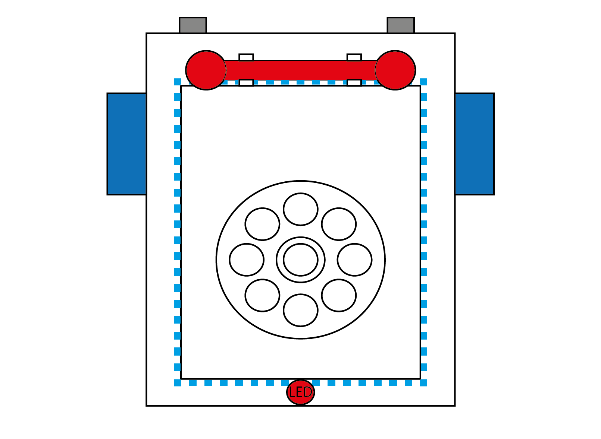
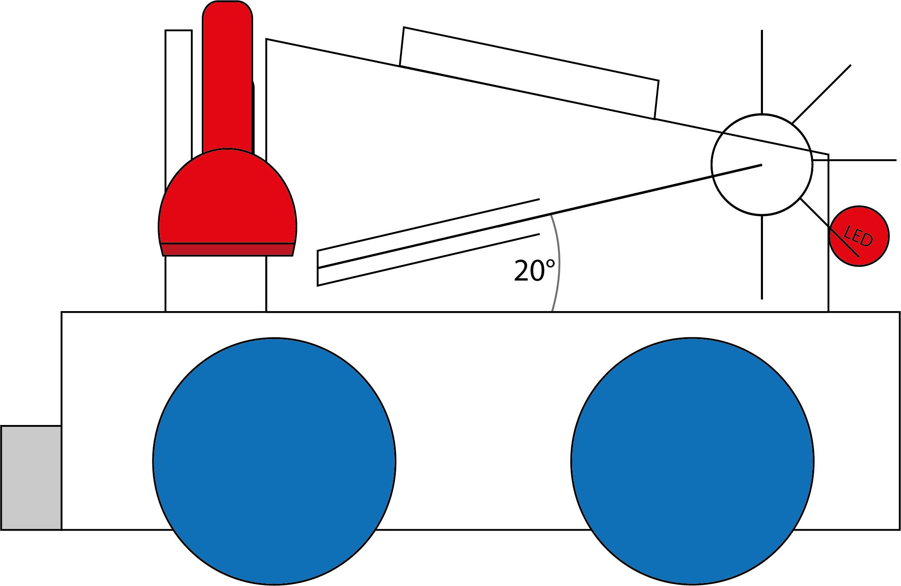

Quem somos
A Xispiritadores é uma empresa inovadora que fabrica robôs de alta qualidade
para diversas indústrias. Nosso foco é criar robôs de excelência e integrá-los de forma eficaz em
diferentes setores, melhorando a qualidade dos serviços
O Xispirito é o nosso mais recente projeto, desenvolvido por uma equipe de profissionais altamente
qualificados e apaixonados por tecnologia

Nosso foco
O Xispirito é um robô criado para ajudar idosos, pessoas com
necessidades especiais e quem precisa de apoio emocional, visando combater a solidão e melhorar a
conexão social de quem tem mobilidade reduzida ou deficiências.
O Xispirito conecta usuários a familiares via vídeo e chat, oferece jogos como
xadrez e bingo para socialização e cognição, além de dança adaptada para fortalecer músculos. As atividades
são personalizadas conforme as preferências e necessidades individuais.
Seja um investidor
Este Termo de Confidencialidade visa proteger as informações confidenciais
compartilhadas entre as Partes durante as negociações e serviços relacionados ao Xispirito.
Obrigações da Parte Receptora:
Manter sigilo absoluto das informações
Usar as informações apenas para os fins deste Termo.
Restringir o acesso às informações a funcionários com obrigações de confidencialidade equivalentes.
Exclusões: As obrigações não se aplicam a informações que:
Se tornem públicas sem violação;
Já eram conhecidas pela Parte Receptora;
Sejam desenvolvidas independentemente;
Sejam exigidas por ordem judicial, desde que notificada a Parte Reveladora.

Prazo:
O Termo vigora até o lançamento do Xispirito ou até a devolução/destruição das informações. As obrigações de confidencialidade permanecem após o término.
Disposições Gerais:
Este Termo não concede direitos de propriedade intelectual, e a violação pode gerar penalidades legais, incluindo indenizações.
Dados
Aqui está um gráfico que apresenta a expectativa de lucro do nosso produto, junto com uma projeção da demanda do Xispirito para os próximos seis meses. Essas informações fornecem uma visão clara do potencial de crescimento e da demanda esperada para o produto.
O diferencial do Xispirito é seu design único, que combina funcionalidade com a aparência de brinquedos antigos, criando uma atmosfera acolhedora. Além de ser fácil de integrar em diversos ambientes, sua portabilidade o destaca entre outros robôs de assistência social.
Caso queira se tornar um investidor da nossa empresa, aqui embaixo esta o contrato para se tornar um investidor:
CONTRATO